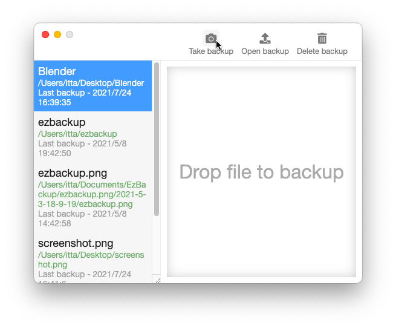
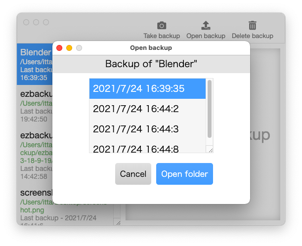

Just drop

If the file is not registered yet, just drop it and it will be backed up.
Take it for one click
If it was registered as a backup, you can easily back it up with just one click of a button.
Very simple

When you want to open a backup, just select the registered date and the backed up file will open easily.